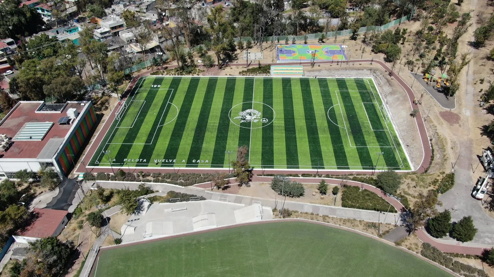
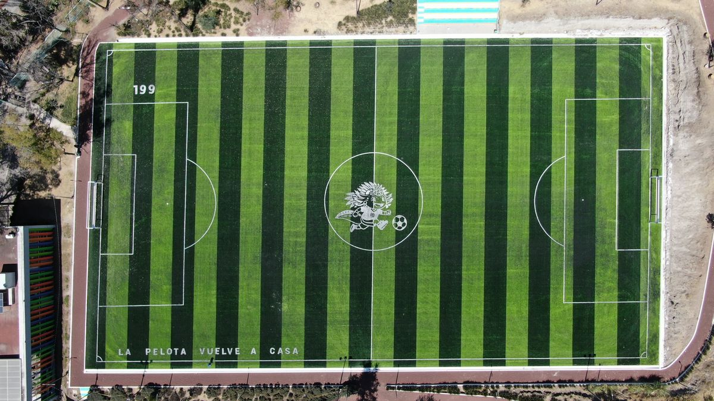
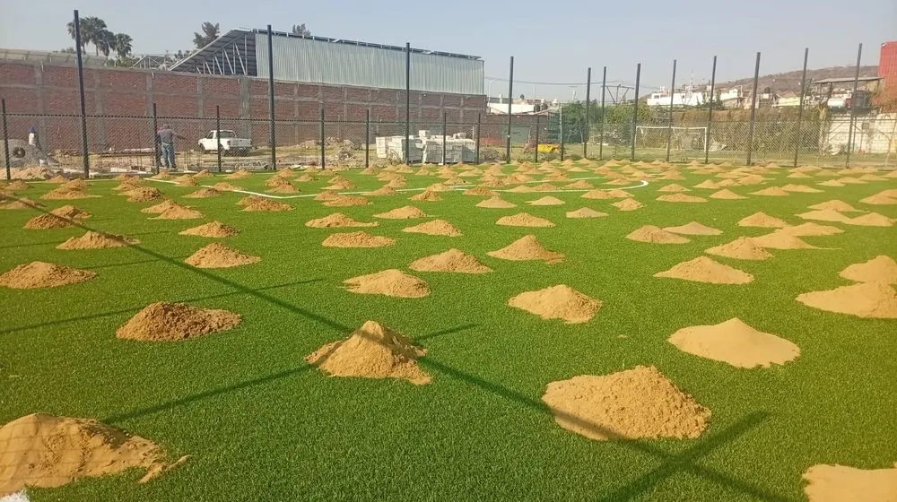

Uso intensivo
Pasto fibrilado
Recomendado para futbol 5, futbol rápido y canchas con tráfico constante. Alta resistencia al desgaste y buen desempeño escolar o comercial.
Construimos canchas de futbol 11 y soccer con pasto sintético profesional para clubes, universidades, municipios, escuelas, academias y proyectos deportivos de gran formato en todo México.


Área jugable mínima 60 x 90 m y máxima 90 x 120 m. Con 1.5 m de contracancha por lado, el terreno total va de 63 x 93 m a 93 x 123 m. Antes de cotizar definimos pasto, líneas, rellenos, accesorios y nivel de uso para entregar una propuesta clara.
Estas son las medidas más consultadas antes de cotizar una cancha con pasto sintético. El área jugable y el terreno total pueden cambiar cuando se deja contracancha perimetral.
Formato compacto para escuelas, fraccionamientos, academias y espacios de entrenamiento.
Con 1.5 m de contracancha por lado, el terreno total recomendado va de 53×22 m a 63 x 43 m.
Puede incluir redondel de madera, postes, redes, porterías y accesorios deportivos.
Con 1.5 m de contracancha por lado, el terreno total recomendado va de 63 x 93 m a 93 x 123 m.
Te recomendamos fibra, altura y relleno según el uso de la cancha de futbol 11 y soccer: escolar, comercial, club, municipio o entrenamiento intensivo.
Recomendado para futbol 5, futbol rápido y canchas con tráfico constante. Alta resistencia al desgaste y buen desempeño escolar o comercial.

Ideal para futbol 7 y soccer cuando buscas mejor apariencia, recuperación de fibra y una sensación más profesional en el juego.

Combina resistencia y apariencia premium. Buena opción para colegios, municipios, clubes y canchas con uso diario.
Una cancha entra por los ojos. Las fotos ayudan a comparar líneas, proporción, color, textura y acabados para imaginar el proyecto terminado.




Cancha compacta para escuelas, fraccionamientos, academias y espacios de entrenamiento.

La opción más solicitada para colegios, clubes, complejos deportivos y municipios.

Proyecto especializado con opción de redondel, postes, redes y accesorios deportivos.

Proyecto formal para universidades, clubes, municipios y centros deportivos.

Proyecto para recreos, clases, torneos internos y uso constante durante la semana.

Cancha pensada para reservas, ligas, academias y uso comercial intensivo.

Sistemas resistentes para proyectos comunitarios, deportivos y de alto tráfico.
Para escuelas, parques, fraccionamientos y centros deportivos con varios usos.
Definimos el alcance según deporte, medidas y accesorios para que la cotización sea clara desde el inicio.
El precio depende de medidas, superficie, tipo de pasto sintético, líneas, rellenos, accesorios, ubicación y alcance contratado. La medida jugable va de 60 x 90 m a 90 x 120 m; con contracancha, el terreno total recomendado va de 63 x 93 m a 93 x 123 m.
Área jugable mínima 60 x 90 m y máxima 90 x 120 m. Con 1.5 m de contracancha por lado, el terreno total va de 63 x 93 m a 93 x 123 m.
Considera espacio deportivo, seguridad perimetral y accesorios según el proyecto.
La recomendación depende del tráfico, apariencia deseada, tipo de calzado y presupuesto.
Líneas, rellenos, uniones, cepillado final, accesorios cotizables y garantía por escrito.
Una galería ayuda a comparar acabados, colores, dimensiones y tipos de cancha antes de pedir tu cotización.
Comparte ciudad, tipo de cancha, medidas y fotos del área del proyecto.
Definimos deporte, medidas, pasto, líneas, rellenos y accesorios.
Recibes alcance claro: suministro, sistema deportivo, rellenos, accesorios, tiempos y garantías.
Instalamos el sistema deportivo, revisamos acabados y entregamos lista para jugar.
Garantía de 9 años contra decoloración por rayos UV del pasto sintético, más 2 años en instalación según alcance contratado.
Antes de cotizar, puedes revisar nuestra presencia en Google y validar la experiencia de otros clientes con proyectos de canchas de futbol.
Futbol 5 inicia desde 40 x 20 m. Futbol 7 usa 50 x 30 m a 60 x 40 m, o 53×22 m a 63 x 43 m con contracancha. Futbol rápido usa 53×22 m. Futbol 11 o soccer usa 60 x 90 m a 90 x 120 m, o 63 x 93 m a 93 x 123 m con contracancha.
El precio depende de medidas, superficie, tipo de pasto sintético, líneas, rellenos, accesorios, ubicación y alcance contratado. La medida jugable va de 60 x 90 m a 90 x 120 m; con contracancha, el terreno total recomendado va de 63 x 93 m a 93 x 123 m.
Puede incluir suministro e instalación de pasto sintético deportivo, líneas de juego, arena sílica, caucho sintético, adhesivos, uniones, trazo deportivo, cepillado final y accesorios según proyecto.
La medida mínima jugable para futbol 11 o soccer es 60 x 90 m y la máxima 90 x 120 m. Al dejar 1.5 m de contracancha por lado, el terreno total se convierte en 63 x 93 m mínimo y 93 x 123 m máximo.
Depende del tráfico y del tipo de juego. Para alto uso se evalúan opciones fibriladas, monofilamento o híbridas, con altura y densidad según el proyecto.
Depende del tamaño y alcance. Una vez que el área está lista para recibir el sistema deportivo, la instalación de pasto, líneas y rellenos puede avanzar en pocos días según medidas y logística.
Sí. Podemos cotizar porterías, redes, malla, alumbrado deportivo, gradas, bancas, marcadores y accesorios específicos según el tipo de cancha.
Sí. Según el alcance contratado, la entrega puede incluir pasto sintético instalado, líneas, rellenos, cepillado final, revisión de uniones y accesorios deportivos.
Sí. Sportmaster realiza proyectos de canchas de futbol con pasto sintético para escuelas, clubes, municipios, fraccionamientos, academias y complejos deportivos en todo México.
Sí. Podemos revisar fotos, medidas y estado actual para recomendar cambio de pasto, líneas, rellenos o renovación del sistema deportivo.
Necesitamos medidas aproximadas, ciudad, tipo de cancha, uso esperado, fotos del área y si buscas solo pasto sintético o una cancha lista para jugar.
Si ya sabes qué cancha quieres construir, renovar o comparar, estas páginas te llevan al ángulo correcto sin vueltas.
Envíanos medidas, ciudad y tipo de deporte. Te respondemos por WhatsApp con una cotización personalizada en menos de 1 hora.